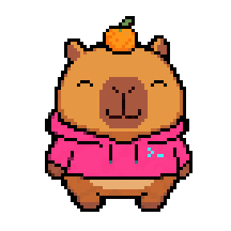

idle → thinking → working → waiting → success → error → sleeping → listening → …
Brand preview (Task B3) — the 8 mascot states with their per-state micro-animation, the wordmark, and a live cross-fade demo.
One mounted layer fading into the next as `state` changes — the same DOM shape `Mascot.tsx` produces.
